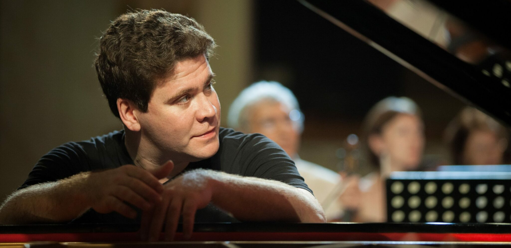

Художественный руководитель
Денис Мацуев зарекомендовал себя как один из самых выдающихся пианистов своего поколения со времён его триумфальной победы на XI Международном конкурсе имени П. И. Чайковского в Москве.
Выступления Мацуева в самых престижных концертных залах мира всегда пользуются неизменным успехом, и он регулярно выходит на сцену с такими всемирно известными оркестрами, как Чикагский, Питтсбургский, Лондонский симфонический оркестры, Нью-Йоркский, Филадельфийский и Лос-Анджелесский филармонический оркестры, Концертгебау, Берлинский, Венский филармонический оркестры, Симфонический оркестр Баварского радио, Лейпцигский оркестр Гевандхауса, симфонический оркестр BBC, оркестр Мариинского театра, Заслуженный коллектив Санкт-Петербургской филармонии, Российский национальный оркестр. Он работает с самыми выдающимися дирижерами мира, среди которых В. Гергиев, З. Мета, Ю. Темирканов, М. Янсонс, К. Тилеманн, К. Мазур, Л. Маазель, К. Нагано, Р. Шайи, А. Паппано, Дж. Нозеда, М. Плетнёв и многие другие.
Денис Мацуев — солист Московской филармонии с 1995 года. С 2004 года он представляет свой ежегодный персональный абонемент «Солист Денис Мацуев». В абонементе вместе с пианистом выступают ведущие оркестры России и зарубежья, при этом характерной особенностью цикла остается сохранение доступности концертов для абонементодержателей. В концертах абонемента последних сезонов приняли участие Симфонический оркестр Артуро Тосканини и Лорин Маазель, Симфонический оркестр Мариинского театра и Валерий Гергиев, флорентийский Maggio Musicale и Зубин Мета, Российский национальный оркестр под управлением Михаила Плетнева, Семен Бычков, Джанандреа Нозеда, Пааво Ярви, а также Владимир Спиваков как солист и дирижер Национального филармонического оркестра России.
Знаковым событием 2010 года для музыканта стало вручение одной из наиболее престижных мировых музыкальных наград – Премии им. Д.Д. Шостаковича. В соответствии с Указом Президента России в июне этого же года Денис Мацуев стал лауреатом Государственной премии Российской Федерации в области литературы и искусства, а в мае в 2011 г. пианисту было присвоено звание «Народный артист России». Денис Мацуев является Почетным профессором МГУ и послом доброй воли ЮНЕСКО.
Особая ответственность музыканта – Межрегиональный благотворительный фонд «Новые имена» им. И. Н. Вороновой, воспитанником, а в настоящее время Президентом которого он является. Фонд за свою историю воспитал несколько поколений артистов и под руководством Дениса Мацуева и основателя фонда Иветты Вороновой продолжает расширять свою просветительскую деятельность в области поддержки талантливых детей. В частности — в рамках Всероссийской программы «Новые имена – регионам России», которая ежегодно проходит более чем в 20 городах России. Также Мацуев является директором конкурсов для молодых пианистов Grand Piano Competition в Москве и Piano Passion в Астане.
В 2017 году Д. Мацуев был награжден орденом Почета и получил Премию Правительства РФ за международный музыкальный фестиваль «Звезды на Байкале».
Пианист выступил идейным вдохновителем и организатором гала-концерта с участием Валерия Гергиева, Анны Нетребко, Пласидо Доминго и других звёзд классического искусства на Красной площади 13 июня 2018 года в Москве в преддверии Чемпионата мира по футболу в России.
В 2019 году пианист был удостоен золотой медали им. Льва Николаева за существенный вклад в просвещение, популяризацию достижений науки и культуры. В этом же году Денис Мацуев стал председателем жюри в номинации «фортепиано» XVI Конкурса им. П. И. Чайковского.
В 2021 году впервые в истории ICMA российский музыкант стал лауреатом в номинации “Лучшая видеозапись”. Престижной награды удостоена рахманиновская программа в исполнении всемирно известного пианиста Дениса Мацуева и оркестра Люцернского фестиваля под управлением итальянского мэтра Риккардо Шайи.
В 2022 году под управлением художественного руководителя Дениса Мацуева состоялся I Международный конкурс пианистов, композиторов и дирижёров имени С. В. Рахманинова.
